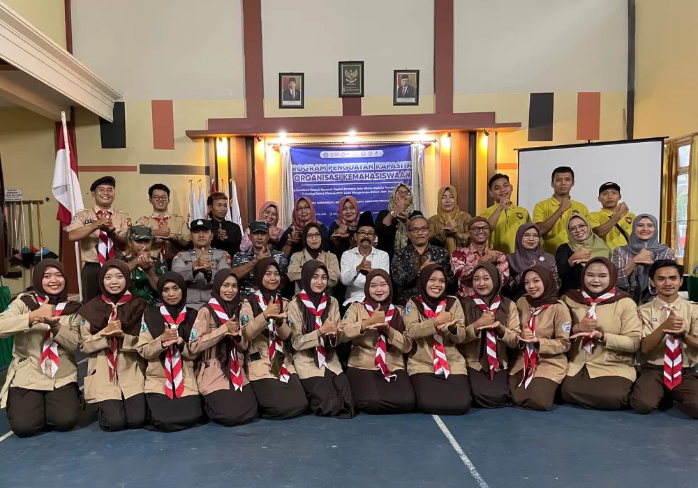

Badan Otonomi Mahasiswa Pramuka UBHI PGRI Tulungagung Raih Prestasi Gemilang
Dengan lolosnya proposal pendanaan dalam Program Penguatan Kapasitas Organisasi Kemahasiswaan (PPK Ormawa) pada tahun ini. Program yang diusulkan berfokus pada pengelolaan sampah berbasis digital.
PPK Ormawa merupakan program pemberdayaan masyarakat pada desa binaan yang diselenggarakan oleh Direktorat Pembelajaran dan Kemahasiswaan (Belmawa), Direktorat Jenderal Pendidikan Tinggi (Ditjen Dikti), serta Kementerian Pendidikan, Kebudayaan, Riset, dan Teknologi (Kemendikbud Ristek) Republik Indonesia.
Kepedulian terhadap lingkungan dan pengelolaan sampah menjadi perhatian utama Tim PPK Ormawa BOM Pramuka Universitas Bhinneka PGRI Tulungagung. Desa Margomulyo, Kecamatan Watulimo, Kabupaten Trenggalek, menjadi sasaran lokasi pelaksanaan program ini.
Dikarenakan kurangnya pemahaman warga tentang pengelolaan sampah, dimana sampah dapat diubah menjadi hal yang lebih bernilai.
Selain itu, antusias masyarakat yang tinggi dengan adanya program ini, membuat kami semakin yakin menjadikan Desa Margomulyo sebagai sasaran program.
Dengan waktu yang cukup panjang, program ini telah menghadirkan berbagai macam kegiatan. Tentunya kegitan-kegiatan yang berhubungan dengan pengolahan dan pengelolaan sampah.
Seperti halnya edukasi kepada masyarakat tentang pentingnya memilah sampah antara organik dan anorganik, pembuatan bank sampah berbasis digital, serta pelatihan daur ulang sampah menjadi barang siap pakai.
Dari berbagai macam kegiatan yang hadir dalam program ini. Berdiri nya suatu bank sampah yang menjadi tujuan utama dari BOM pramuka UBhi. Seiring dengan zaman yang semakin modern, maka muculah gagasan untuk mendirikan Bank Sampah Digital “APELIN”. Bank sampah yang didirikan dengan balutan teknologi digital.
Lolosnya pendanaan PPK Ormawa ini merupakan komitmen BOM Pramuka Universitas Bhinneka PGRI dalam memberikan kontribusi yang positif bagi masyarakat, khususnya dibidang kebersihan lingkungan.
Program ini diharapkan dapat mejadi langkah awal dalam mewujudkan lingkungan masyarakat yang sehat dan menjadikan sampah lebih bernilai.***